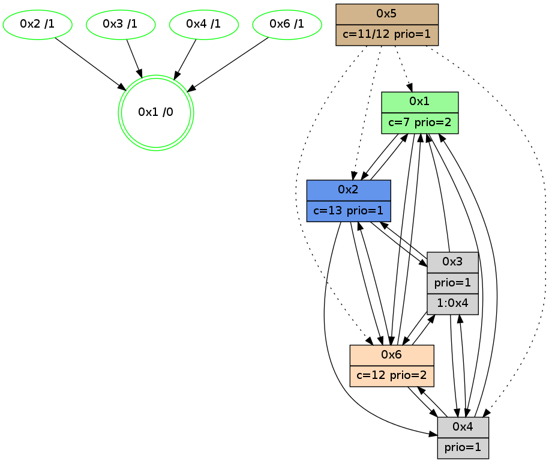

>> << IDX [start] -100 -25 -5 +0 +5 +25 +100 [1060.15068698]
 Previous packets
----------------------------------------------------------------------
1055.229605 beacon01(adaf) #0 coord=01,02,05,03,04,06 cycle=432.0ms assoc
-- color-indic=1 64 3e 95
1055.239565 beacon02(adaf) #0 coord=01,02,05,03,04,06 cycle=432.0ms assoc 64 6f 6a
1055.249567 beacon05(adaf) #0 coord=01,02,05,03,04,06 cycle=432.0ms assoc 64 c9 40
1055.259566 beacon03(adaf) #0 coord=01,02,05,03,04,06 cycle=432.0ms assoc 64 55 64
1055.269566 beacon04(adaf) #0 coord=01,02,05,03,04,06 cycle=432.0ms assoc 64 f3 4e
1055.279567 beacon06(adaf) #0 coord=01,02,05,03,04,06 cycle=432.0ms assoc 64 87 52
1055.291804 [Hello(3): seq=860 sym=6,2,1,4 sysInfo=hasWarning stat=6:7,9,11,4/2:7,9,2,0/1:4,6,7,1/4:10,13,3,1]
1055.293931 [STC(2)->1 #0.169 new-neigh,tree-change,inconsistent-stability,stable,to-color d=1]
1055.296522 [Color(2) seq=248 @0:0 color=13 prio=1 c=7,c,e;1,4,6,8,9,b]
1055.298807 [STC(6)->1 #0.169 new-neigh,tree-change,inconsistent-stability,stable,to-color d=1]
1055.300325 [STC(3)->1 #0.169 new-neigh,tree-change,inconsistent-stability,stable,to-color d=1]
1055.302194 [Color(6) seq=247 @0:0 color=12 prio=2 c=7,d,e;1,4,6,8,9,b]
1055.305942 [TreeStatus(3)-.->1 #0.169 new-neigh,tree-change,inconsistent-stability,stable child=1]
1055.310042 [Hello(1): seq=762 sym=2,4,6,3 sysInfo=hasWarning,coloring-mode-on,ColoringModeRequestCalled stat=2:6,3,1,0/4:1,5,1,1/6:12,10,8,5/3:4,0,5,1]
----------------------------------------------------------------------
1055.721713 beacon01(adaf) #0 coord=01,02,05,03,04,06 cycle=432.0ms assoc
-- color-indic=1 64 fa fa
1055.731675 beacon02(adaf) #0 coord=01,02,05,03,04,06 cycle=432.0ms assoc 64 ab 05
1055.741674 beacon05(adaf) #0 coord=01,02,05,03,04,06 cycle=432.0ms assoc 64 0d 2f
1055.751674 beacon03(adaf) #0 coord=01,02,05,03,04,06 cycle=432.0ms assoc 64 91 0b
1055.761674 beacon04(adaf) #0 coord=01,02,05,03,04,06 cycle=432.0ms assoc 64 37 21
1055.771675 beacon06(adaf) #0 coord=01,02,05,03,04,06 cycle=432.0ms assoc 64 43 3d
1055.783424 [Hello(2): seq=1350 sym=3,6,1,4 sysInfo=hasWarning stat=3:2,0,2,1/6:11,10,6,4/1:12,10,15,0/4:0,1,0,0]
1055.785588 [Color(1) seq=289 @0:0 color=7 prio=2 c=1,4,6,8,9,b,c,d;0,2,3,5,a,e]
1055.787824 [Hello(4): seq=862 sym=2,1,6,3 sysInfo=hasWarning stat=2:7,10,2,0/1:13,1,12,0/6:2,7,1,6/3:4,10,9,3]
1055.791587 [Color(4) seq=143 @0:0 prio=1 c=7,c;1,4,6,8,9,b,d,e]
----------------------------------------------------------------------
1056.213820 beacon01(adaf) #0 coord=01,02,05,03,04,06 cycle=432.0ms assoc
-- color-indic=1 64 b6 4a
1056.223780 beacon02(adaf) #0 coord=01,02,05,03,04,06 cycle=432.0ms assoc 64 e7 b5
1056.233782 beacon05(adaf) #0 coord=01,02,05,03,04,06 cycle=432.0ms assoc 64 41 9f
1056.243783 beacon03(adaf) #0 coord=01,02,05,03,04,06 cycle=432.0ms assoc 64 dd bb
1056.253782 beacon04(adaf) #0 coord=01,02,05,03,04,06 cycle=432.0ms assoc 64 7b 91
1056.263782 beacon06(adaf) #0 coord=01,02,05,03,04,06 cycle=432.0ms assoc 64 0f 8d
1056.275535 [Hello(3): seq=861 sym=6,2,1,4 sysInfo=hasWarning stat=6:7,9,11,4/2:8,9,2,0/1:5,7,7,1/4:11,14,3,1]
1056.278209 [Color(2) seq=249 @0:0 color=13 prio=1 c=7,c,e;1,4,6,8,9,b]
1056.281346 [Color(6) seq=248 @0:0 color=12 prio=2 c=7,d,e;1,4,6,8,9,b]
1056.287073 [Hello(1): seq=763 sym=2,4,6,3 sysInfo=hasWarning,coloring-mode-on,ColoringModeRequestCalled stat=2:6,3,1,0/4:2,6,1,1/6:12,10,8,5/3:4,0,5,1]
----------------------------------------------------------------------
1056.705928 beacon01(adaf) #0 coord=01,02,05,03,04,06 cycle=432.0ms assoc
-- color-indic=1 64 72 25
1056.715889 beacon02(adaf) #0 coord=01,02,05,03,04,06 cycle=432.0ms assoc 64 23 da
1056.725889 beacon05(adaf) #0 coord=01,02,05,03,04,06 cycle=432.0ms assoc 64 85 f0
1056.735889 beacon03(adaf) #0 coord=01,02,05,03,04,06 cycle=432.0ms assoc 64 19 d4
1056.745890 beacon04(adaf) #0 coord=01,02,05,03,04,06 cycle=432.0ms assoc 64 bf fe
1056.755889 beacon06(adaf) #0 coord=01,02,05,03,04,06 cycle=432.0ms assoc 64 cb e2
1056.767643 [Hello(2): seq=1351 sym=3,6,1,4 sysInfo=hasWarning stat=3:3,0,2,1/6:11,11,6,4/1:13,11,15,0/4:1,2,0,0]
1056.770138 [Color(1) seq=290 @0:0 color=7 prio=2 c=1,4,6,8,9,b,c,d;0,2,3,5,a,e]
1056.772120 [Hello(4): seq=863 sym=1,6,3 asym=2 sysInfo=hasWarning stat=1:14,1,12,0/6:3,8,1,6/3:5,10,9,3/2:7,10,2,0]
1056.775972 [Color(4) seq=144 @0:0 prio=1 c=7,c;1,4,6,8,9,b,d,e]
----------------------------------------------------------------------
1057.198035 beacon01(adaf) #0 coord=01,02,05,03,04,06 cycle=432.0ms assoc
-- color-indic=1 64 fc 30
1057.207997 beacon02(adaf) #0 coord=01,02,05,03,04,06 cycle=432.0ms assoc 64 ad cf
1057.217996 beacon05(adaf) #0 coord=01,02,05,03,04,06 cycle=432.0ms assoc 64 0b e5
1057.227998 beacon03(adaf) #0 coord=01,02,05,03,04,06 cycle=432.0ms assoc 64 97 c1
1057.237997 beacon04(adaf) #0 coord=01,02,05,03,04,06 cycle=432.0ms assoc 64 31 eb
1057.247996 beacon06(adaf) #0 coord=01,02,05,03,04,06 cycle=432.0ms assoc 64 45 f7
1057.259764 [Hello(3): seq=862 sym=6,2,1,4 sysInfo=hasWarning stat=6:8,10,11,4/2:8,9,2,0/1:6,7,7,1/4:11,15,3,1]
1057.262428 [Color(2) seq=250 @0:0 color=13 prio=1 c=7,c,e;1,4,6,8,9,b]
1057.265366 [Hello(1): seq=764 sym=2,4,6,3 sysInfo=hasWarning,coloring-mode-on,ColoringModeRequestCalled stat=2:6,3,1,0/4:3,7,1,1/6:12,10,8,5/3:4,0,5,1]
1057.267306 [Color(6) seq=249 @0:0 color=12 prio=2 c=7,d,e;1,4,6,8,9,b]
1057.268837 [STC(1) #0.170 new-neigh,tree-change,inconsistent-stability,stable,to-color d=0]
----------------------------------------------------------------------
1057.690144 beacon01(adaf) #0 coord=01,02,05,03,04,06 cycle=432.0ms assoc
-- color-indic=1 64 38 5f
1057.700104 beacon02(adaf) #0 coord=01,02,05,03,04,06 cycle=432.0ms assoc 64 69 a0
1057.710105 beacon05(adaf) #0 coord=01,02,05,03,04,06 cycle=432.0ms assoc 64 cf 8a
1057.720106 beacon03(adaf) #0 coord=01,02,05,03,04,06 cycle=432.0ms assoc 64 53 ae
1057.730066 beacon04(adaf) #0 coord=01,02,05,03,04,06 cycle=432.0ms assoc 64 f5 84
1057.740107 beacon06(adaf) #0 coord=01,02,05,03,04,06 cycle=432.0ms assoc 64 81 98
1057.751718 [STC(6)->1 #0.170 new-neigh,tree-change,inconsistent-stability,stable,to-color d=1]
1057.753814 [Hello(4): seq=864 sym=1,6,3 asym=2 sysInfo=hasWarning stat=1:15,1,13,0/6:4,9,1,6/3:6,10,9,3/2:7,10,2,0]
1057.755780 [Hello(2): seq=1352 sym=3,6,1,4 sysInfo=hasWarning stat=3:4,1,2,1/6:11,12,6,4/1:14,12,0,0/4:1,3,0,0]
1057.758143 [Color(3) seq=179 @0:0 prio=1 c=7,c;1,4,6,8,9,b,d,e]
1057.762406 [STC(4)->1 #0.170 new-neigh,tree-change,inconsistent-stability,stable,to-color d=1]
1057.764689 [Color(4) seq=145 @0:0 prio=1 c=7,c;1,4,6,8,9,b,d,e]
----------------------------------------------------------------------
1058.182251 beacon01(adaf) #0 coord=01,02,05,03,04,06 cycle=432.0ms assoc
-- color-indic=1 64 74 ef
1058.202213 beacon05(adaf) #0 coord=01,02,05,03,04,06 cycle=432.0ms assoc 64 83 3a
1058.232213 beacon06(adaf) #0 coord=01,02,05,03,04,06 cycle=432.0ms assoc 64 cd 28
1058.246419 [Hello(6): seq=778 sym=4,2,1,3 sysInfo=hasWarning stat=4:2,0,11,2/2:10,11,2,0/1:5,7,9,1/3:14,5,10,10]
1058.249550 [Color(6) seq=250 @0:0 color=12 prio=2 c=7,d,e;1,4,6,8,9,b]
----------------------------------------------------------------------
1058.674362 beacon01(adaf) #0 coord=01,02,05,03,04,06 cycle=432.0ms assoc
-- color-indic=1 64 b0 80
1058.684322 beacon02(adaf) #0 coord=01,02,05,03,04,06 cycle=432.0ms assoc 64 e1 7f
1058.694323 beacon05(adaf) #0 coord=01,02,05,03,04,06 cycle=432.0ms assoc 64 47 55
1058.704324 beacon03(adaf) #0 coord=01,02,05,03,04,06 cycle=432.0ms assoc 64 db 71
1058.714324 beacon04(adaf) #0 coord=01,02,05,03,04,06 cycle=432.0ms assoc 64 7d 5b
1058.724324 beacon06(adaf) #0 coord=01,02,05,03,04,06 cycle=432.0ms assoc 64 09 47
1058.736814 [Hello(4): seq=865 sym=1,6,3 sysInfo=hasWarning stat=1:15,1,13,0/6:5,10,2,6/3:7,10,9,3]
1058.739812 [Color(4) seq=146 @0:0 prio=1 c=7,c;1,4,6,8,9,b,d,e]
1058.742297 [Color(3) seq=180 @0:0 prio=1 c=7,c;1,4,6,8,9,b,d,e]
1058.745522 [Color(1) seq=292 @0:0 color=7 prio=2 c=1,4,6,8,9,b,c,d;0,2,3,5,a,e]
1058.752048 [Color(2) seq=251 @0:0 color=13 prio=1 c=7,c,e;1,4,6,8,9,b]
----------------------------------------------------------------------
1059.166471 beacon01(adaf) #0 coord=01,02,05,03,04,06 cycle=432.0ms assoc
-- color-indic=1 64 fd 87
1059.176432 beacon02(adaf) #0 coord=01,02,05,03,04,06 cycle=432.0ms assoc 64 ac 78
1059.186432 beacon05(adaf) #0 coord=01,02,05,03,04,06 cycle=432.0ms assoc 64 0a 52
1059.196434 beacon03(adaf) #0 coord=01,02,05,03,04,06 cycle=432.0ms assoc 64 96 76
1059.206433 beacon04(adaf) #0 coord=01,02,05,03,04,06 cycle=432.0ms assoc 64 30 5c
1059.216433 beacon06(adaf) #0 coord=01,02,05,03,04,06 cycle=432.0ms assoc 64 44 40
1059.227659 [Hello(1): seq=766 sym=2,4,6 sysInfo=hasWarning,coloring-mode-on,ColoringModeRequestCalled stat=2:6,4,1,0/4:3,8,2,1/6:13,11,9,5]
1059.230193 [Hello(6): seq=779 sym=4,2,1,3 sysInfo=hasWarning stat=4:2,1,11,2/2:10,12,2,0/1:5,8,9,1/3:15,6,10,10]
1059.233350 [Color(6) seq=251 @0:0 color=12 prio=2 c=7,d,e;1,4,6,8,9,b]
----------------------------------------------------------------------
1059.658579 beacon01(adaf) #0 coord=01,02,05,03,04,06 cycle=432.0ms assoc
-- color-indic=1 64 39 e8
1059.668540 beacon02(adaf) #0 coord=01,02,05,03,04,06 cycle=432.0ms assoc 64 68 17
1059.678541 beacon05(adaf) #0 coord=01,02,05,03,04,06 cycle=432.0ms assoc 64 ce 3d
1059.688540 beacon03(adaf) #0 coord=01,02,05,03,04,06 cycle=432.0ms assoc 64 52 19
1059.698540 beacon04(adaf) #0 coord=01,02,05,03,04,06 cycle=432.0ms assoc 64 f4 33
1059.708540 beacon06(adaf) #0 coord=01,02,05,03,04,06 cycle=432.0ms assoc 64 80 2f
1059.721006 [Hello(4): seq=866 sym=1,6,3 sysInfo=hasWarning stat=1:0,2,13,0/6:6,11,2,6/3:8,11,9,3]
1059.724004 [Color(4) seq=147 @0:0 prio=1 c=7,c;1,4,6,8,9,b,d,e]
1059.726489 [Color(3) seq=181 @0:0 prio=1 >1.@4 c=7,c,d;1,4,6,8,9,b,e]
1059.729453 [STC(1) #0.171 new-neigh,tree-change,inconsistent-stability,stable,to-color d=0]
1059.733312 [Color(1) seq=293 @0:0 color=7 prio=2 c=1,4,6,8,9,b,c,d;0,2,3,5,a,e]
1059.736242 [Color(2) seq=252 @0:0 color=13 prio=1 c=7,c,e;1,4,6,8,9,b]